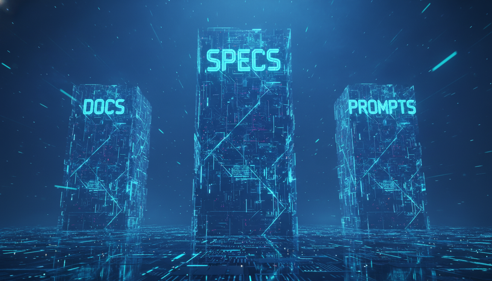

The Three Essential Directories for Agentic Engineering
The landscape of software engineering is undergoing its most significant transformation since the invention of the high-level language. We are moving away from an era defined by "syntax mastery"—where the primary value of an engineer was their ability to recall complex language features—into the agentic era.
"Without project-specific context, these high-powered AI agents are prone to hallucination, architectural drift, and the implementation of outdated patterns."

To harness the full potential of agentic coding, we must treat our repositories as structured knowledge graphs. By implementing the Three Essential Directories framework, we provide our AI agents with a persistent "brain".
The Knowledge Base
The Blueprint
The Runtime
AI models are frequently trained on outdated documentation. The /ai_docs directory solves that problem by hosting Markdown versions of third-party documentation, internal heuristics, and integration details.
We must move away from unstructured development. Instead, we adopt Spec-Driven Development. A specification file acts as the "Algorithm of Thought"—defining *what* is being built and *why*.
# Spec: User Authentication Update ## Problem Statement Migrate from local JWT to Auth0 providers. ## Technical Implementation - Modify `auth_middleware.ts` - Update `User` schema in Prisma ## Validation - Run `npm test`, ensure 15 auth tests pass.
Context Priming & Session Initialization
Unlike /specs which are feature-specific, these are reusable scripts for the agent's operational behavior.
Create a command like prime.md.
One of the most important shifts in philosophy is how we handle errors. If an agent fails to solve a problem, the error is almost always found in the /specs or the /ai_docs.
ERROR: Ambiguous Specification.
ACTION: Refine Context.
RESULT: Virtuous Cycle Established.
The transition to agentic engineering is not about replacing developers; it is about elevating them. By implementing the Three Essential Directories, you create a repository that is "AI-native."
Mastering context orchestration today is the best way to future-proof your career and your codebase for the era of the agent.